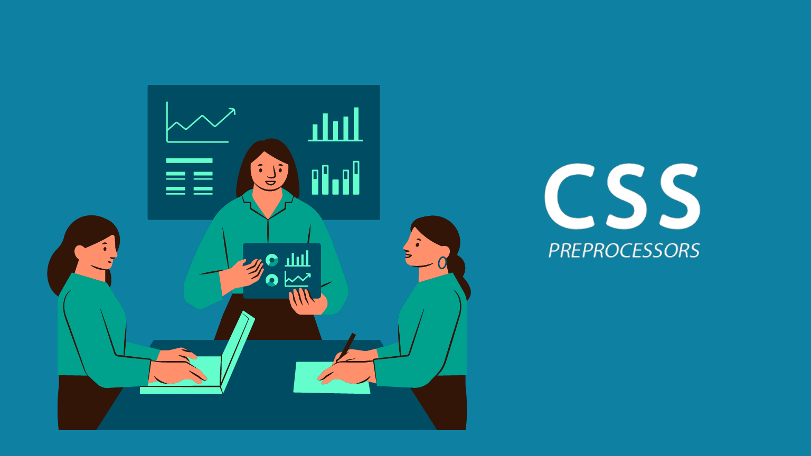

This topic could cover how to use CSS preprocessors like Sass and Less to write more efficient and maintainable CSS code, including features such as variables, mixins, nesting, and functions.

★ CSS Preprocessor
➤ CSS preprocessors are tools that extend the functionality of CSS by adding features that are not natively supported by CSS.
➤ Preprocessors such as Sass, Less, and Stylus allow for variables, mixins, functions, and other programming constructs to be used in CSS.
➤ With preprocessors, you can write cleaner, more maintainable code, and create reusable styles.
➤ Preprocessors also offer advanced features such as nesting, which allows you to write CSS rules that are more organized and easier to read.
➤ Another advantage of preprocessors is that they provide better support for responsive design, making it easier to write CSS that adapts to different screen sizes.
➤ Preprocessors can be compiled into standard CSS, which means they can be used in any web project without requiring special tools or software.
➤ Many popular frameworks and tools, such as Bootstrap and Grunt, use preprocessors to streamline the development process and create more efficient code.
Overall, CSS preprocessors are a powerful tool for web developers looking to create cleaner, more efficient, and more maintainable CSS code.
CSS style typography Code:
In this example, we set the font family and size for the entire page using the body selector. We then style the heading elements h1, h2, and h3 by setting their font size, weight, and margin bottom.
Next, we style the paragraph elements p by setting the line-height and margin bottom. Finally, we style links by setting their color and removing the underline, and adding an underline on hover.
Of course, you can customize these styles to fit the design of your website.
★ How to use a CSS preprocessor?
➤
First, you'll need to install Sass on your machine. You can do this using a package manager like npm or by downloading the Sass compiler directly from the Sass website.
➤
Once you have Sass installed, you can create a new Sass file with a .scss extension. Here's an example of what that might look like:
scss Code:
In this example, we've defined some variables for colors and font sizes that we can reuse throughout our stylesheet. We've also defined a mixin for applying a gradient background, which we can use on any element that needs a gradient.
Then we've defined some styles for a button and a heading, using the variables and mixins we defined earlier. We've also added some hover styles to the button.